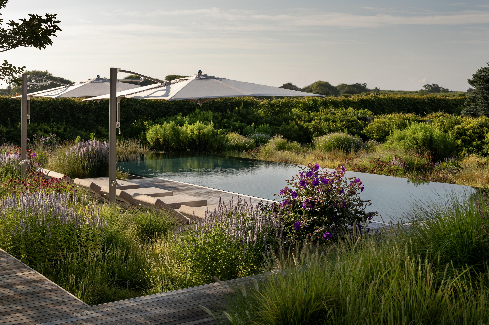
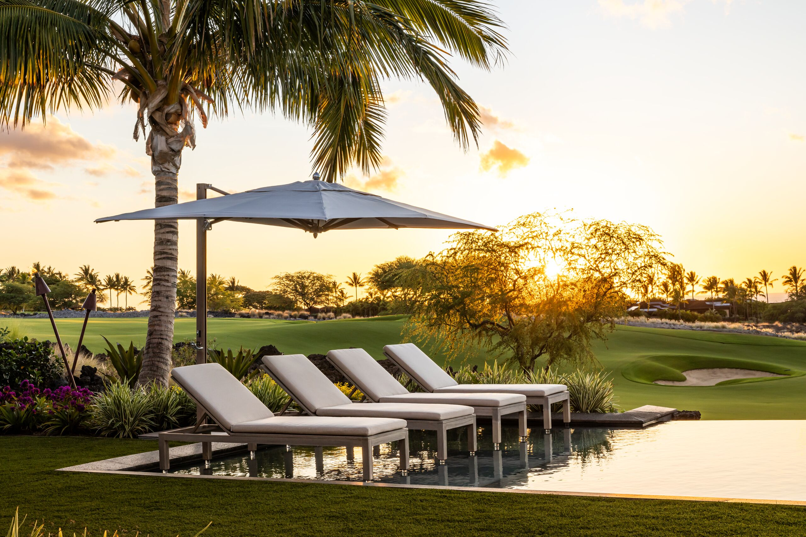
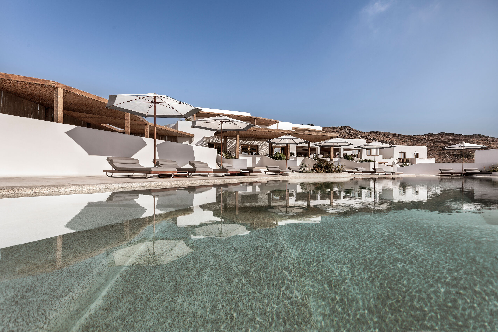
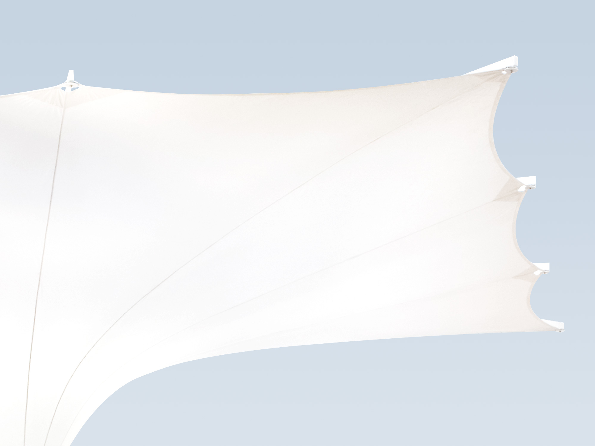
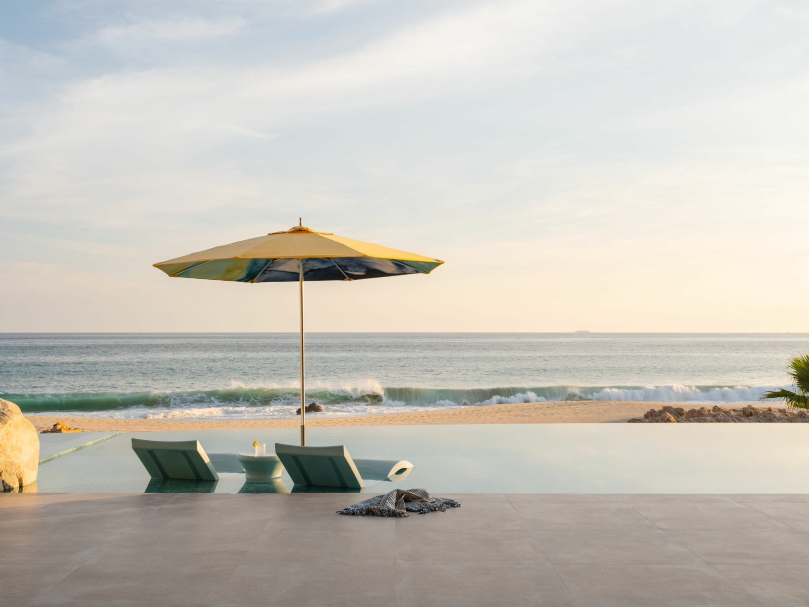
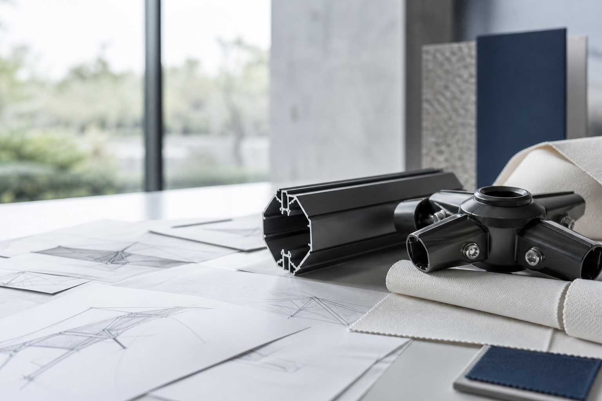
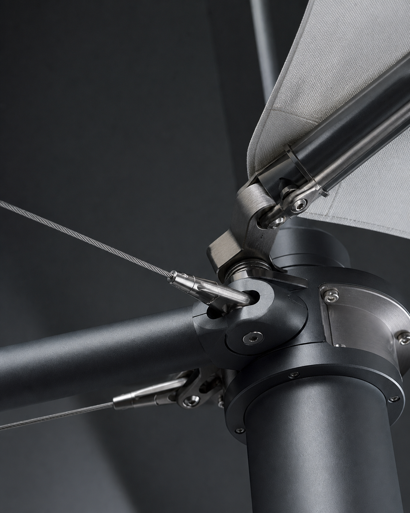
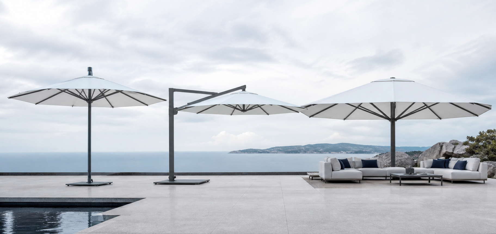
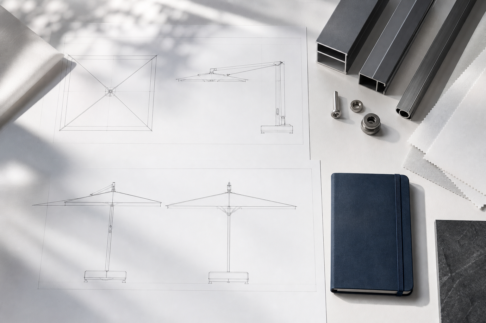

Cantilever collectionView range →
Architectural shade
Parasols for resorts, residences and remarkable hospitality spaces.








Manufacturing and OEM / ODM
From early concepts and material direction to production preparation, each program develops around the intended setting.
Project resources
Useful starting points for designers, developers and procurement teams.

Compare center pole, cantilever and large-format directions.
Organize the setting, quantities and design intent.
Review canopy, frame and material preferences.